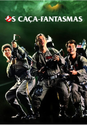

Não sabe o que assistir?

Os Caça-Fantasmas
Em Nova York Peter Venkman, Ray Stantz e Egon Spengler são três cientistas do departamento de psicologia da Columbia University, que se dedicam ao estudo de casos paranormais. Quando a subvenção termina eles são despedidos e Venkman sugere que abram um negócio próprio, a exterminadora de fantasmas Ghostbusters. Inicialmente eles só têm despesas e nenhum cliente, mas eis que surge Dana Barrett, uma violoncelista que teve uma experiência assustadora em seu apartamento.
Clique em "Encontrar filme" que traremos
de algum filme para você assistir hoje.